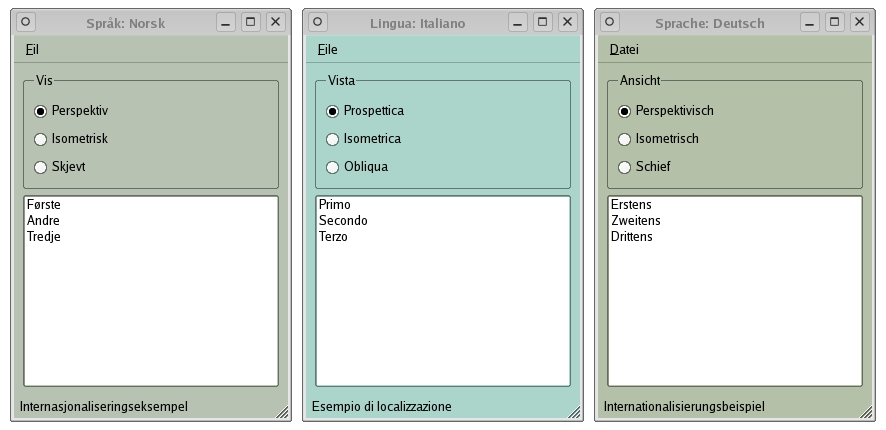

I18N Example
The Internationalization (I18N) example demonstrates Qt's support for translated text. Developers can write the initial application text in one language, and translations can be provided later without any modifications to the code. It also demonstrates how to detect the system language settings and show the UI in the appropriate language.

Files: